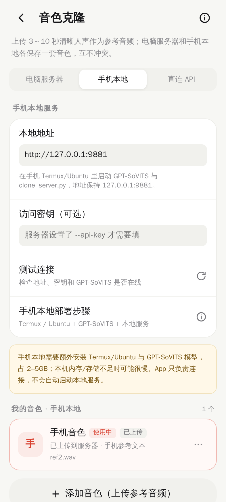

01
安装官方 GPT-SoVITS
从官方仓库下载 Windows 整合包或源码，解压到电脑上，确认目录里有 api_v2.py。
第一次需要安装 GPT-SoVITS 和模型；之后每次开机只需运行一个启动脚本。
从官方仓库下载 Windows 整合包或源码，解压到电脑上，确认目录里有 api_v2.py。
把本页的 wheel-clone-server.zip 解压到 GPT-SoVITS 旁边，双击 start_windows.bat；Linux 用 start_linux.sh。它会同时启动 GPT-SoVITS（9880）和克隆服务（9881）。
./start_linux.sh /path/to/GPT-SoVITS
终端会打印 手机访问: http://192.168.x.x:9881。打开 App → 设置 → 音色克隆，填这个地址，测试连接，然后上传参考音频和对应文本。
winget install Gyan.FFmpeg，Ubuntu 执行 sudo apt install ffmpeg。没有它也能用，但只能上传 wav。App 把录音上传到你自己的机器，克隆服务保存并用它合成。不会经过我们的服务器，也没有第三方账号。
--api-key，局域网也能加一道锁
服务包很小，模型和运行环境仍以 GPT-SoVITS 官方包为准。
它依赖 PyTorch、CUDA/CPU 推理和多 GB 模型，普通 APK 无法可靠承载。把模型放在电脑上、手机只做客户端，才是稳定且省电的方案。
确认手机和电脑在同一 Wi-Fi；确认终端打印的 IP；在电脑浏览器打开 http://127.0.0.1:9881/health 自检；Windows 防火墙第一次弹窗要选“允许”；公司/酒店网络可能隔离设备。
服务器缺少 ffmpeg。安装 ffmpeg 并重新启动服务；或先把音频转成 wav 再上传。
可以，但需要 Termux 或 Ubuntu 环境，先安装 GPT-SoVITS 和模型，再运行 start_phone.sh，App 地址填 http://127.0.0.1:9881。手机没有 GPU，合成会比电脑慢很多；存储/内存不足时不建议。
可以，但克隆服务和 GPT-SoVITS 必须能看到同一份 voices/ 目录，并把容器内路径配置一致；否则 GPT-SoVITS 找不到参考音频。最容易成功的是两者都跑在宿主机上。
这个页面是纯静态站点，可直接上传到 Cloudflare Pages。把项目自定义域名设为 gptsovit.rainstone103.top，Cloudflare 会自动创建 CNAME；如果域名 DNS 不在 Cloudflare，需要在当前 DNS 服务商添加 CNAME 指向 <项目>.pages.dev。
下载服务包，把 GPT-SoVITS 跑起来，然后用你的声音抽一次。